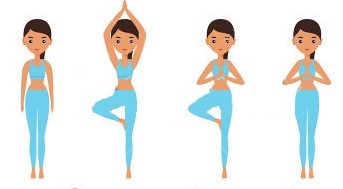
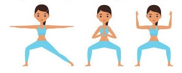
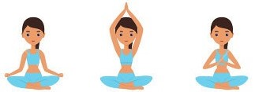

Importance
As baby grows within our body, more energy and strength is needed to be able to carry the weight. Yoga poses strengthen our hips, back, arms and shoulders.
Consider yoga a way to get physically stronger and emotionally healthier during pregnancy.
There are forms of yoga to suit any fitness level. It's safe to do in pregnancy, and with the right modifications, can help you to stay fit, strong and supple.
When to start doing yoga in pregnancy?
The best time to start yoga if you've never done it before is in the second trimester, after about 14 weeks. Yoga guidelines advise you not to try postures in the first trimester, if you're not used to them.
Some Yoga moves that strengthen your body
To warm up your muscles first inhale and sweep your arms out and overhead, bending back slightly then Exhale and stand upright, returning your hands to your heart center. Repeat for 10 full breaths.
Inhale, then exhale as you lift your right arm above your shoulder and turn your head, eyes looking up. Hold for 1 full breath as you lower your right arm and straighten leg. Return to starting position, then repeat for 5 full breaths. Reverse feet and repeat sequence on the other side.
it erect on a pillow in a comfortable, cross-legged position, your hands on your lower belly. breathe deeply through your nose, keeping your face and jaw relaxed. Focus on relaxing your pelvic-floor muscles. Exhale slowly and repeat.